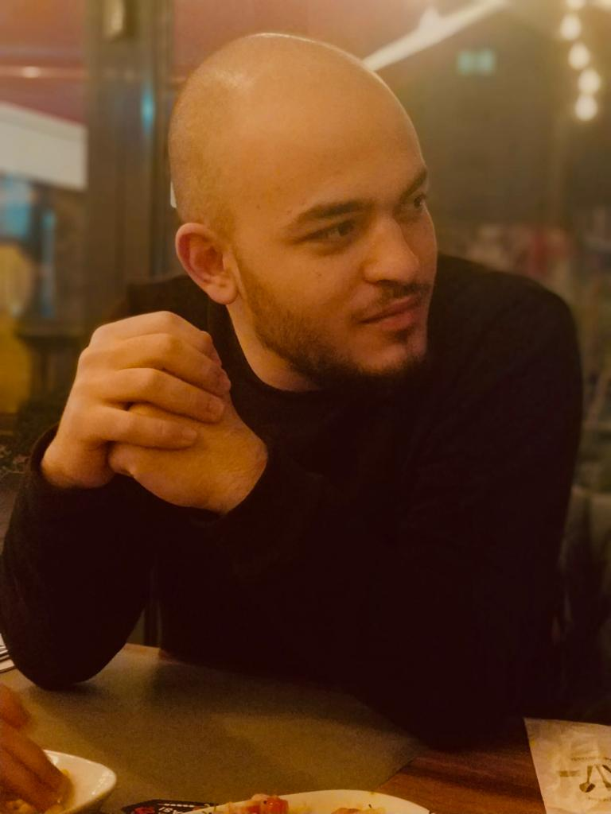

Muhammet Furkan ATALAY |
 | |
|---|---|---|
Personal Info
EducationCertificates | ||
| Birthdate: 28.10.1999 Phone: +90 539 303 1590 Email: furkannatalaay@gmail.com LinkedIn: linkedin.com/in/muhammet-furkan-atalay/ |
Konya Food and Agriculture University
2018 – Present Undergraduate Konya Food and Agriculture University 2017 – 2018 Department of English Language |
• KOMEK – Arduino (15 August 2019) • BEDAF – Global English Test (03 July 2018) |
Job Experiences |
Skills |
|
Intern: Anadolu Birlik Holding (2 August – 4October 2021) • IT Department - 45 weekdays Anadolu Birlik Holding is one of the biggest agricultural product producer in Turkey. I learned some software programs such as SAP, SQL, and JAVA. Also, I helped my colleagues about some network problems of the company . |
Language: English B2, German A1 Computer: Python, C, C++, JAVA, SQL, Flutter |
|
Communities |
Interests |
|
• Konya Food and Agriculture University, Sports Community Leader (October 2019 – Resuming) • Konya Food and Agriculture University, Career Community Membership (October 2018 – June 2019) . |
Network and Hardware Arduino Programming Mobile Programming . |
|